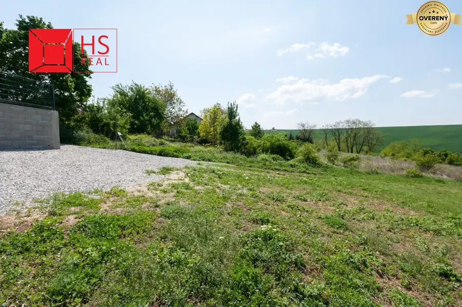
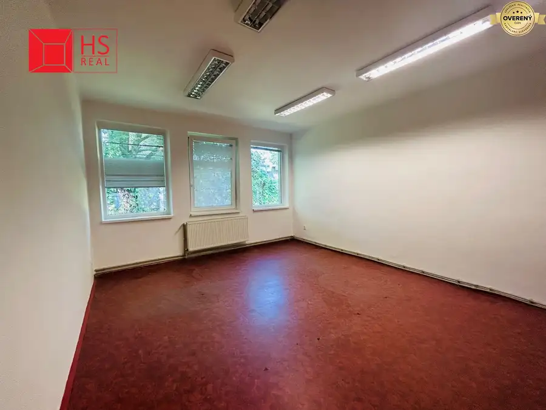
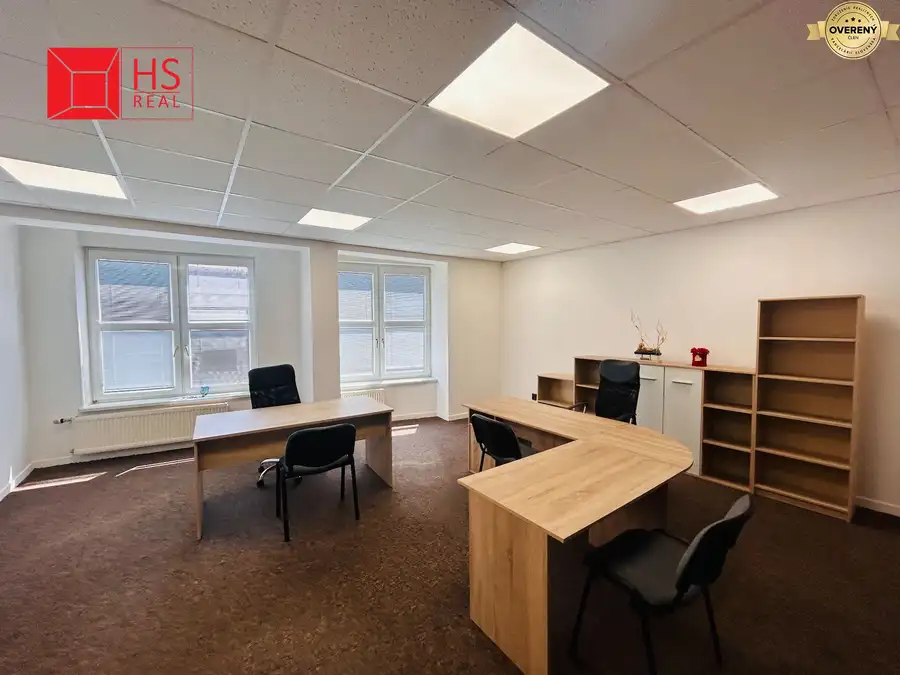

Prenájom · Nebytové priestory
Prenájom kancelárie - obchod. priestoru 200m2 v NZ
Nové Zámky
Cena dohodou
- Plocha200 m²
- Poschodie3. z 3
- Stavpo rekonštrukcii
- Vlastníctvofiremné
O nehnuteľnosti
Objekt ponúka: kuchyňu, kúpeľňu, jednu veľkú priestrannú miestnosť, dve menšie, vlastné kúrenie, (kotol viessmann), wifi, výťah a parkovanie vo dvore
Mesačné náklady : cca 100€ - vlastné merače.
Priestor je vhodný pre administratívnu, projektovú kanceláriu, grafické štúdio, služby ´beauty´ charakteru prípadne firemný byt.
Viac info a kontakt k obhliadke:
Parametre
| Celková rozloha | 200 m² |
|---|---|
| Úžitková plocha | 200 m² |
| Poschodie | 3 |
| Počet poschodí | 3 |
| Vlastníctvo | firemné |
| Stav | po rekonštrukcii |
| El. napätie | 230/400V |
| Plyn | áno |
| Internet | wifi |
| Kúpeľňa | sprchovací kút |
| Vykurovanie | vlastné - plyn |
| Výťah | áno |
| Parkovanie | vnútorné |
| Postavené z | tehla |
| Zariadenie | nezariadený |
| Zateplený objekt | áno |
| Energetický certifikát | nie |
| Bezbariérový prístup | áno |
| Okná | plastové |
| Terén | rovina |
| Prístupová cesta | betónová cesta |
| Dátum zverejnenia | 7. 3. 2024 |
Kde to je
Ďalšie ponuky
Celá ponukaMohlo by Vás zaujímať

Pozemok3 320 000 €Predaj 43 árového pozemku v Nitre Nitra 4300 m² Ponúkame na predaj 43 árový pozemok vo vyhľadávanej lokalite v Nitre, časť Šúdol, vhodný na výstavbu rodinných domov s možnosťou pripojenia na…
Nebytové priestory9 Cena dohodouKancelárie na prenájom na ul. Budovateľská v NZ Nové Zámky 23 m² Ponuka prenájmu kancelárskych priestorov na ulici Budovateľská v priemyselnej časti mesta Nové Zámky. Ide o 6 miestností vo výmere 14,5m2 a 23m2.…
Nebytové priestory3 Cena dohodouPrenájom kancelárie v samom centre mesta Nové Zámky Nové Zámky 58 m²2. podlažie ...